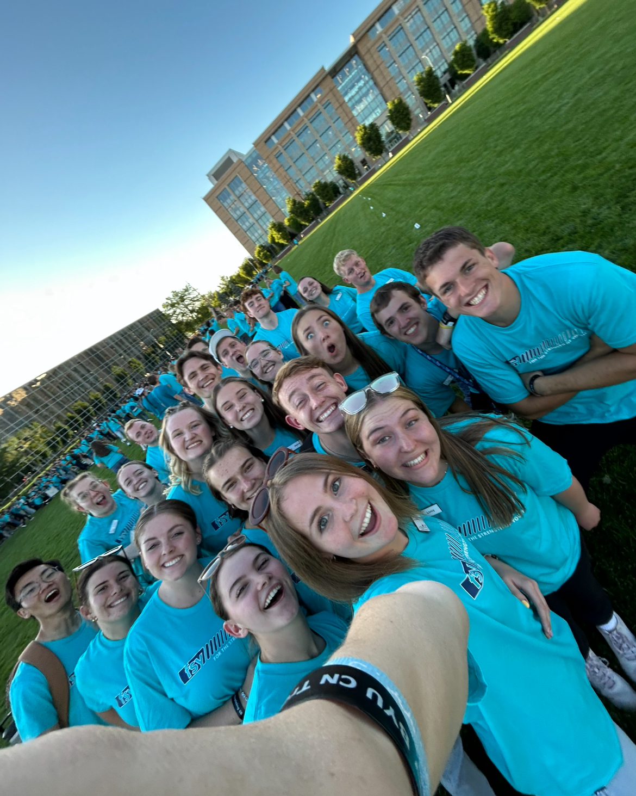
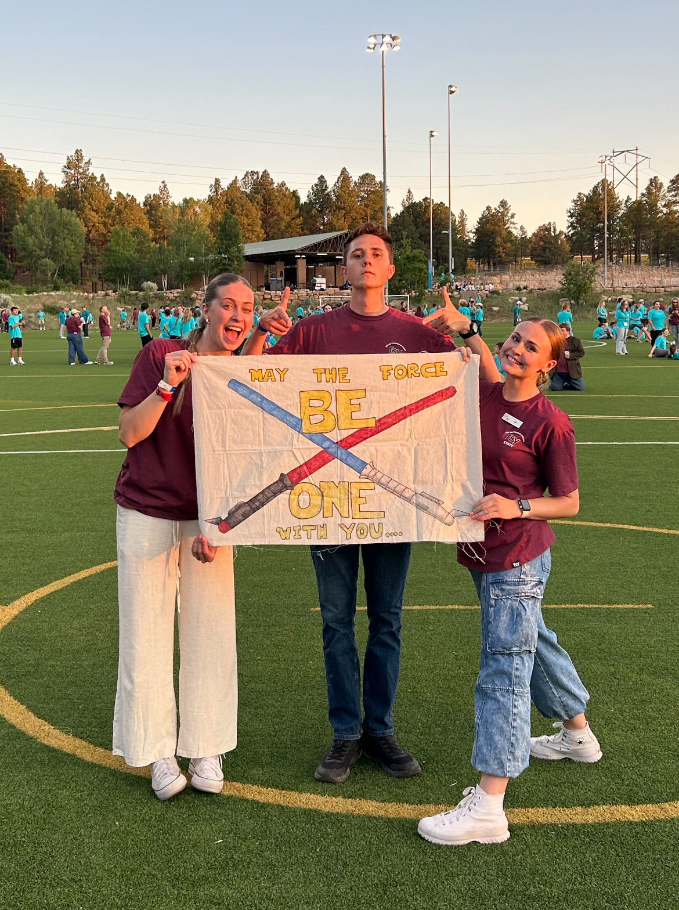
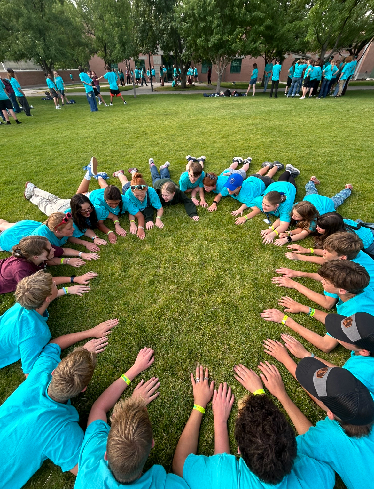
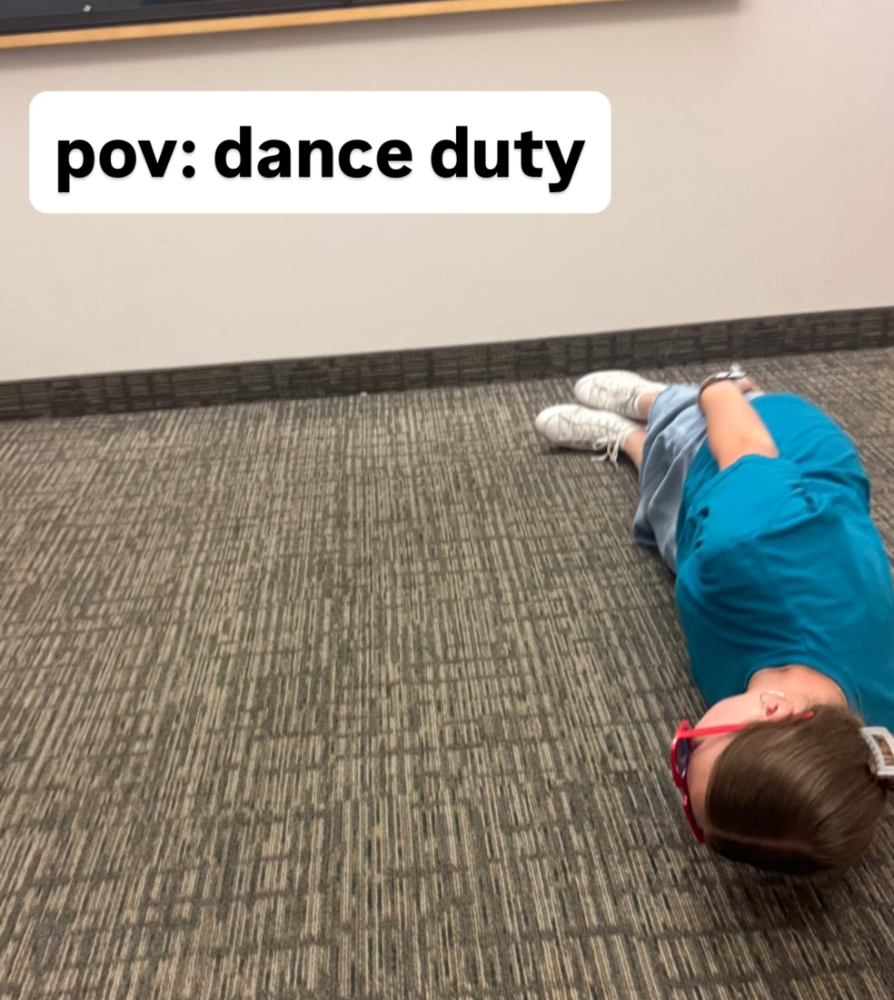
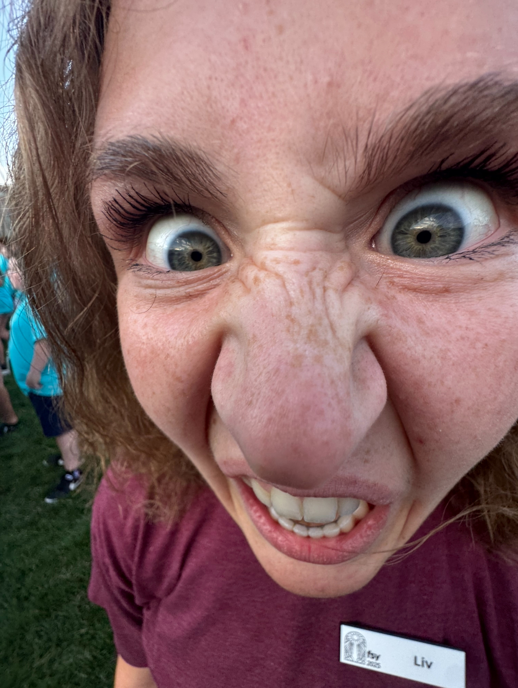
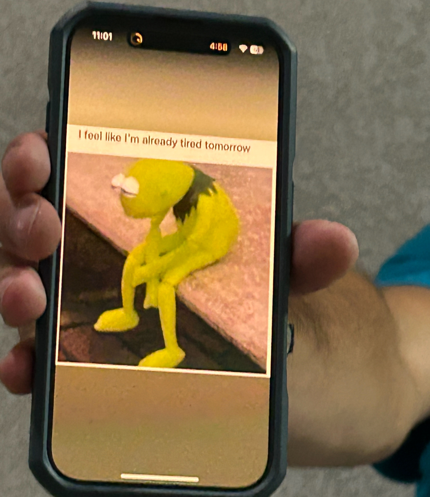

What Is FSY?
The FSY program is an acronym which means "For Strength of Youth". This program is a multi-day youth conference hosted by The Church of Jesus Christ of Latter-day Saints across the United States and Internationally. Participants aged 14–18 come together for a week of devotionals, activities, dancing, learning, and friendship — all centered on developing faith in Jesus Christ and personal growth.
As a counselor, I was put into a co-counselorship, and together we were assigned the responsibility to mentor a group of youth throughout that week. Our job was to spent the week guiding, encouraging, and making sure our participants had a safe and meaningful experience.

This picture is of my counselor training group. It proves that FSY is all about bring people together in powerful ways! #POWERTOBECOME
My Responsibilities as a Counselor
My days started early and ended late. Here's a look at what each day typically involved and the skills I built along the way:
- Morning Devotionals & Check-ins
- Led our group in morning personal and group scripture study
- Set the tone for a positive, focused day, and FUN filled day!
- Checked in individually with youth who seemed discouraged
- Offical Activity Facilitator
- Organized/Taught team-building games and camp activities
- Encouraged group participation from every group member
- Adapted activities for different energy levels and personalities, cultivating a safe environment
- Evening Programs & Dances
- Supervised evening socials and helped youth feel included
- Coordinated with directors on logistics and schedules
- Mentoring & Conflict Resolution
- Mediated disagreements within the group calmly and fairly
- Had one-on-one conversations with youth who needed support


What I Learned
"In God’s eyes, the greatest leaders have always been the greatest followers." - Stephen W. Owen
I am beyond grateful for all that FSY has taught me about the kind of leader and follower of Jesus Christ that I want to become. Leadership isn't about being in charge — it's about showing up and showing love consistently for the people in your sphere of influence. Through my experience leading as an FSY counselor, I learned how to lead through example by reading a room, bringing the energy, adapting my communication style, and finding ways to help lift those around me.
Along with that, I also learned — and am still learning — the value of having patience for those around me, including myself. Herding 20 teenagers through a tight schedule in the middle of summer while keeping everyone energized and spiritually focused is genuinely hard — yet so rewarding.
The following pictures dipict the reality behind how it sometimes feels to be an FSY counselor.



DANCE BREAK!!
This video shows one of the best parts about the FSY experience; learning the line dances!!
Youth Program Participation
Youth programs like FSY reach hundreds of thousands of young people each year. The interactive visualization below explores trends in youth engagement and volunteerism in the United States.

Quick Links!
Use these on-page anchor links to navigate:
What is FSY? My Role What I Learned Dance Video Tableau Data
Want to try something fun? Play Snake →